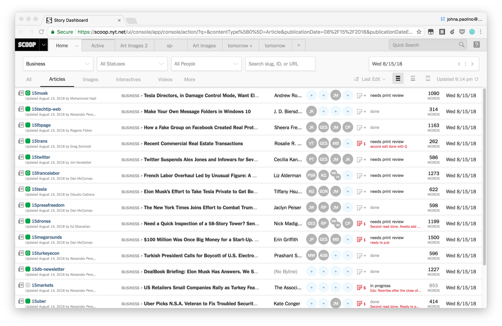
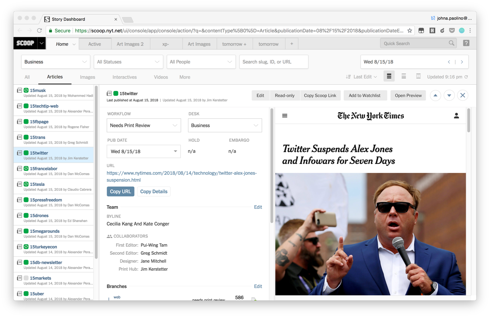
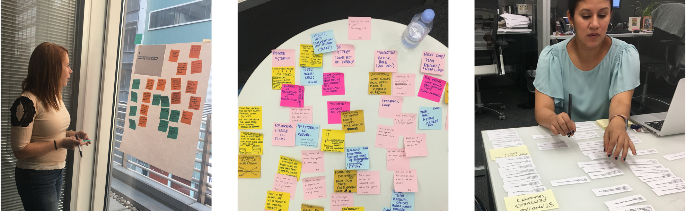
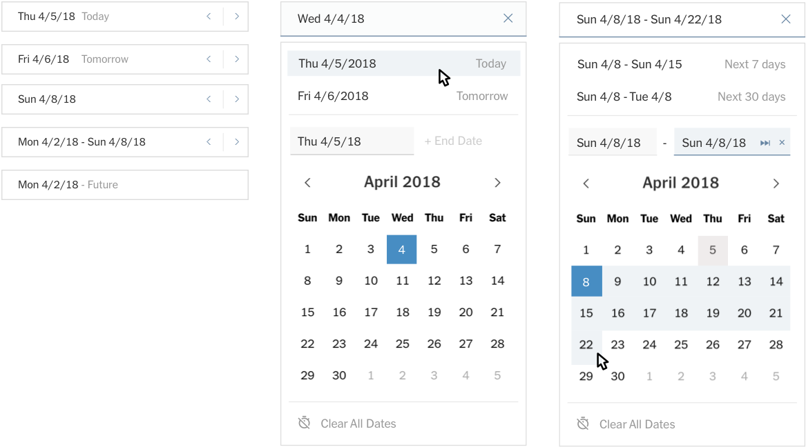
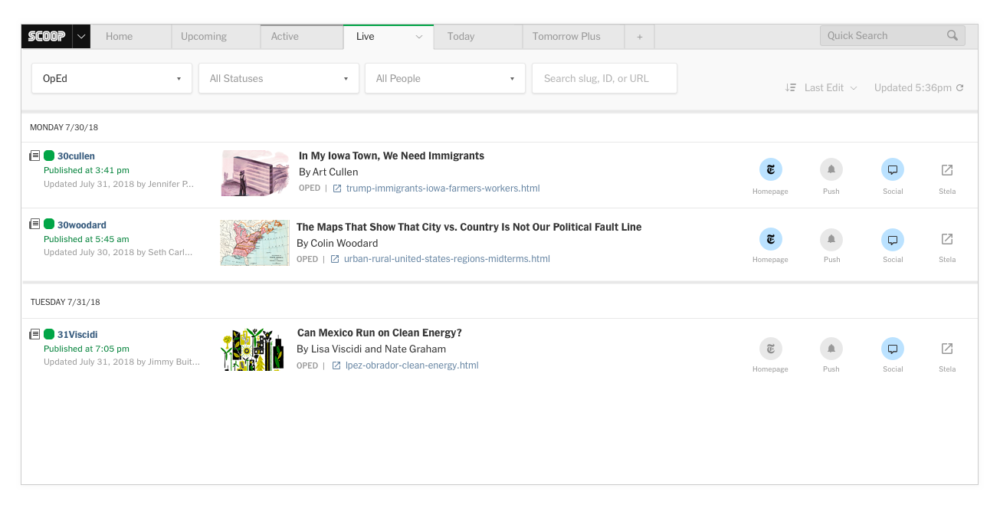
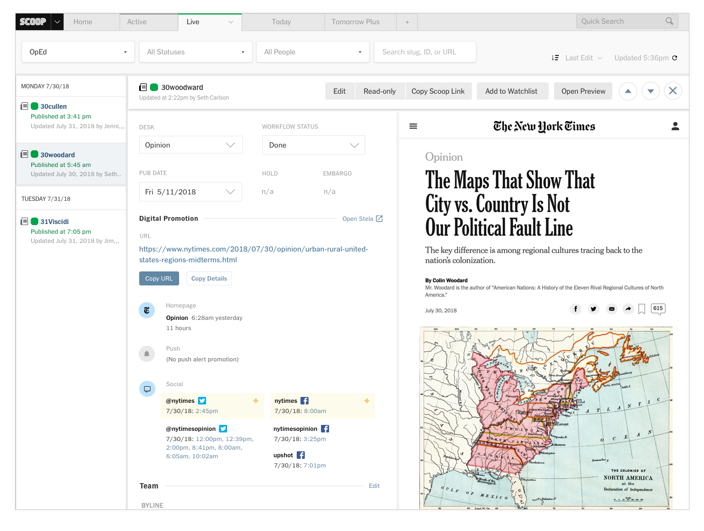
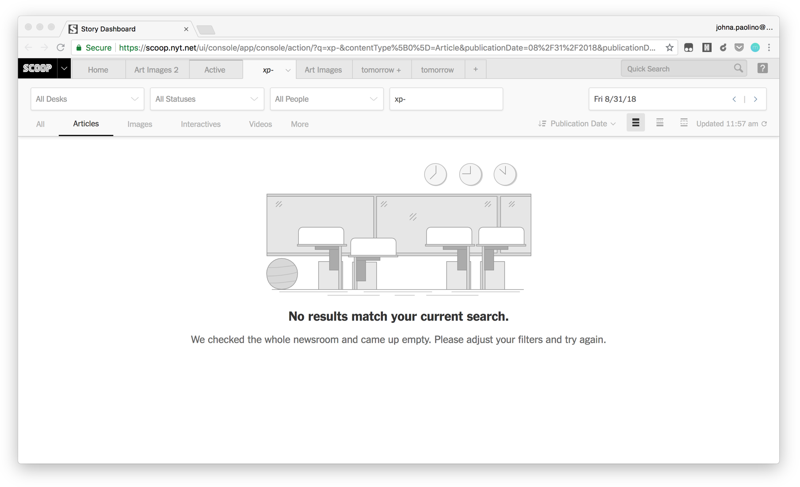

The Story Dashboard leaves behind a disconnected and labor-intensive process for a more reliable and transparent one that lets editors focus on the journalism. Shown below is the Detail View layer where editors can navigate between results for coordinating information without opening up the article for editing.

Process
The focus on this project came from a number of prototying and working sessions I led with newsroom editors. We worked to identify the main pain points across a story's life cycle.

Custom UI
The project has also required some custom and complex interaction design. One example is a date picker that was designed specifically for newsroom editors who wanted quickly available multiple date selection types.

The Live Tab
While this project has served first as a consolidation effort, it is also laying the groundwork for a more digitally focused future. One of the major challenges has been creating an interface that is easily extensible for digital planning & promotion with minimal disruption to existing patterns. The Live Tab is a perfect example of a feature that neatly extends the Story Dashboard. It contains a list of editor's published stories, and in that space makes promotional information quickly accessible — showing how a story was promoted on the new home page, social and push notifications.


As you have most likely noticed, Content Management System work can be highly technical. I enjoy adding illustration and fun into the interface when possible.
